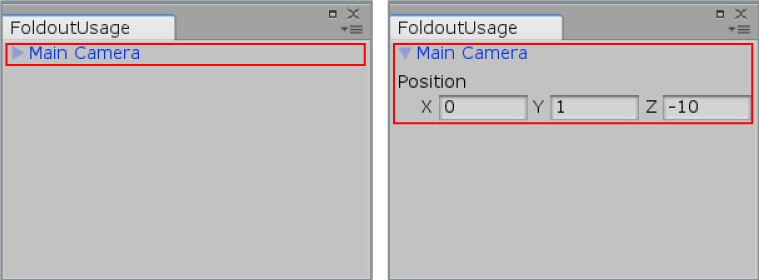

EditorGUILayout.Foldout
public static bool Foldout(bool foldout,
string content,
bool toggleOnLabelClick,
GUIStyle style = EditorStyles.foldout);
public static bool Foldout(bool foldout,
GUIContent content,
bool toggleOnLabelClick,
GUIStyle style = EditorStyles.foldout);
public static bool Foldout(bool foldout,
GUIContent content,
GUIStyle style = EditorStyles.foldout);
Parameters
| foldout | The shown foldout state. | |
| content | The label to show. | |
| style | Optional GUIStyle. | |
| toggleOnLabelClick | Whether to toggle the foldout state when the label is clicked. |
Returns
bool The foldout state selected by the user. If true, you should render sub-objects.
Description 描述
Make a label with a foldout arrow to the left of it.
This is useful for creating tree or folder like structures where child objects are only shown if the parent is folded out.

Foldout in an Editor Window.
// Create a foldable menu that hides/shows the selected transform position. // If no Transform is selected, the Foldout item will be folded until // a transform is selected.
using UnityEditor; using UnityEngine;
public class FoldoutUsage : EditorWindow { bool showPosition = true; string status = "Select a GameObject";
[MenuItem("Examples/Foldout Usage")] static void Init() { FoldoutUsage window = (FoldoutUsage)GetWindow(typeof(FoldoutUsage)); window.Show(); }
public void OnGUI() { showPosition = EditorGUILayout.Foldout(showPosition, status); if (showPosition) if (Selection.activeTransform) { Selection.activeTransform.position = EditorGUILayout.Vector3Field("Position", Selection.activeTransform.position); status = Selection.activeTransform.name; }
if (!Selection.activeTransform) { status = "Select a GameObject"; showPosition = false; } }
public void OnInspectorUpdate() { this.Repaint(); } }